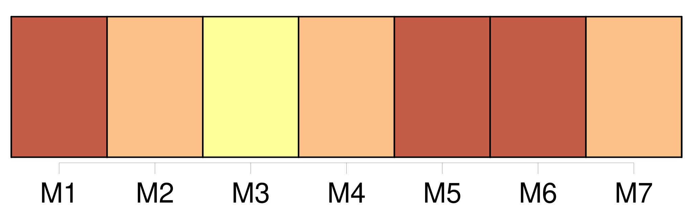
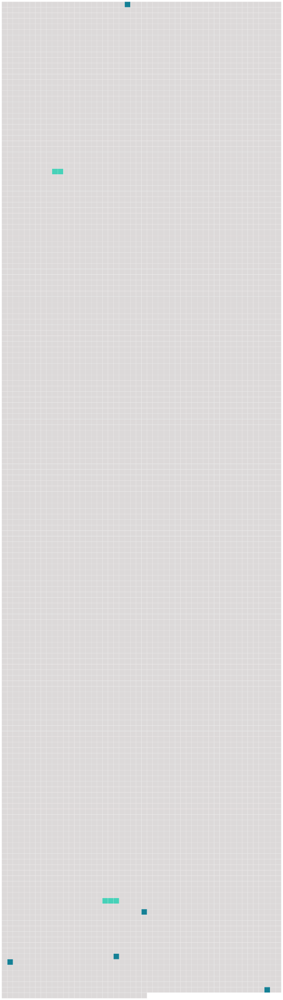

Longueur nb maillons : 7 mentions |
 |
Comme je pleurais, moi aussi, en écrivant sur le mur son nom au-dessous du mien, avec la date de [notre] séparation!! [56 phrases]
Laurence était déjà dans ses bras, et [toutes deux] pleuraient. [269 phrases] Il est certain que, lorsque [les deux amies] et la mère aveugle se retrouvèrent seules ensemble au coin du feu, Pauline fut surprise et même un peu blessée de voir que Laurence reportait toute sa reconnaissance sur la vieille femme. [2 phrases] — Quant à toi, ma Pauline, dit -elle à son amie lorsqu' [elles] furent tête à tête, je te fâcherais si je te faisais le même remercîment. [16 phrases] Elle s'efforça de répondre à ses questions par d'autres questions ; elle voulut lui faire dire les joies intimes de sa vie évangélique, et tourner toute l'exaltation de [leur] entretien vers cette poésie du devoir qui lui semblait devoir être le partage d'une âme pieuse et résignée. [1 phrases] Dans [leur] premier entretien de la matinée, elle avait épuisé tout ce que sa vertu avait d'orgueil et de finesse pour dissimuler sa souffrance. [9 phrases]
Puis, involontairement, revenant à ses idées théâtrales et oubliant tout ce qu' [elles] venaient de se dire, elle s'écria, frappée de plus en plus : |
 |
Il est possible de télécharger la ressource sur la page Ortolang |
Si vous avez des questions ou vous voyez des erreurs, merci d'envoyer un mail à silvia.federzoni89@gmail.com |